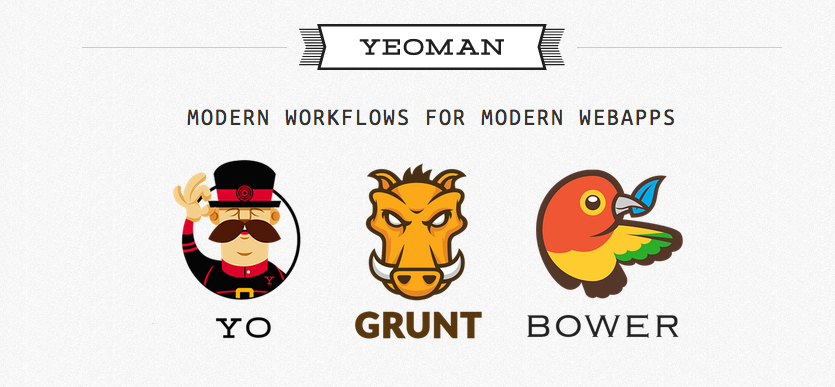

Single Page Application mit AngularJS und Yeoman
Oliver Zeigermann / @DJCordhose
Online-Version: http://djcordhose.github.io/serious-javascript/angular-yeoman/angular.html
Single Page Applications (SPA)
- Web-Anwendungen, laufen im Browser
- Nur eine einzige Seite wird an den Browser vom Server ausgeliefert
- Alle weiteren Aktionen werden von dem JavaScript kontrolliert, das mit der Seite ausgeliefert wurde
- Zugriffe auf den Server nicht zur Darstellungen, sondern zur Übertragung von Daten
- Erlaubt höchste Interaktivität und beste Reaktion auf Benutzereingaben
- Komfort vergleichbar mit Desktop-Anwendungen
- Offline-Fähigkeit
Architektur einer (SPA)
- Server wird nur noch zur Kommunikation mit dem Client benötigt
- Client macht REST/JSON calls zum Server
- Client wird entweder komplett geladen oder in Modulen nachgeladen
- Reload, Links, Bookmarks, Forward-/Backward-Navigation über Deep-Links (#)
- Lokale und Offline-Speicherung über LocalStorage oder IndexedDB
- Kommunikation mit mehreren API-Servern über CORS möglich
Architektur-Varianten
Anforderungen an Dynamik und Stabilität

Copyright 2014, Oliver Zeigermann
SPA Variante #1: Lean

Copyright 2014, Oliver Zeigermann
SPA Variante #2: Fat

Copyright 2014, Oliver Zeigermann
Technische Anforderungen an den Browser
- SPAs laufen länger (teilweise viel länger) als eine klassiche Webseite
- Manche SPAs schließt man fast nie
- Bei mir sind das Gmail, Facebook und Twitter
- Die Anforderungen für Speicher-Management vergleichbar wie bei einer Desktop-Applikation
- Reaktionszeiten der Anwendungen sind ebenso wichtig
- Moderne Browser bieten Mittel des Profilings und der Analyse
- Chrome sticht hervor, aber auch Firefox und die neuesten IE (ab 11) erlauben Profiling
- Mehr dazu: https://speakerdeck.com/addyosmani/javascript-memory-management-masterclass
Überlick: Frameworks zur Implementierung von SPAs
- Kein Framework (vanilla.js)
- jQuery
- AngularJS
Zum Vergleich: Hello World ohne Framework
<input id="in" onkeyup="setModel(this.value)">
<p><span id="log"></span>, World</p>
<input type="button" value="Clear" onclick="reset()">
<script>
var model;
function setModel(value) {
model = value;
document.getElementById("log").innerHTML = model;
document.getElementById("in").value = model;
}
function reset() {
setModel("");
}
window.onload = function() {
setModel("Hello");
};
</script>jQuery
- Standard-JavaScript-Bibliothek
- Fast überall zu finden
- Abstrahiert nicht von der Ebene der DOM-Manipulation
- Typischerweise "unobtrusive", d.h. bestehendes HTML wird nicht verändert
Hello World jQuery
<input id="in">
<p><span id="log"></span>, World</p>
<input id="btn" type="button" value="Clear">
<script>
var model;
function setModel(value) {
model = value;
$("#log").html(model);
$("#in").val(model);
}
$(document).ready(function () {
$("#in").on("keyup", function (event) {
setModel($("#in").val());
});
$("#btn").on("click", function () {
setModel("");
});
setModel("Hello");
});
</script>Angular
HTML enhanced for web apps!

- HTML enhanced for web apps!
- HTML wird erweitert (Directives)
- Eigene Directives (== Komponenten) sind möglich
- 2-Wege-Databinding
AngularJS Hello World #1
<html ng-app>
<head>
<script src="angularjs/angular.min.js"></script>
</head>
<body>
<input ng-model="name">
<p>Hello, {{name}}!</p>
</body>
</html>AngularJS Hello World #2
<html ng-app>
<head>
<script src="https://ajax.googleapis.com/ajax/libs/angularjs/1.2.11/angular.min.js"></script>
<script src="controller.js"></script>
</head>
<body ng-controller="HelloController">
<input ng-model="greeting.text">
<p>{{greeting.text}}, World!</p>
</body>
</html>function HelloController($scope) {
$scope.greeting = {
text: 'Hello'
};
}AngularJS Hello World #3
<body ng-app ng-controller="HelloController as helloController">
<input ng-model="helloController.greeting.text">
<p>{{helloController.greeting.text}}, World!</p>
<input type="button" value="Clear" ng-click="helloController.clear()">
</body>function HelloController() {
this.greeting = {
text: 'Hello'
};
}
HelloController.prototype.clear = function() {
this.greeting.text = '';
};
Konzepte
- Client-Seitige Templates
- MVC (Modell ist eher ViewModel)
- Die drei Ds
- Data Binding
- Dependency Injection
- Directives
Artefakte
Directives: HTML-ErweiterungenScope: Kontext, der Modell-Inhalte und -Logik enthältController: Initialisiert den Scope bzw. erzeugt eine Controller-InstanzModule: Kapselt einen Teil der Anwendung, kann andere Teil importierenServices: Instanzen, Typen oder Singletons, die injiziert werden können
Directives: HTML-Erweiterungen
Angular definiert eine Reihe von zusätzlichen HTML-Attributen
- Neben Attributen sind auch Elemente, Styles und Kommentare möglich
- Attribute können mit
data-beginnen, um HTML5-konform zu sein - Etwas sehr ähnliches wird unter dem Namen
Web Componentsstandardisiert - Eigene Erweiterungen sind möglich
ng-app
- z.B.
<body ng-app="CustomerApp"> - Ab dem Element mit diesem Attribut steht die Seite unter Angular-Management
- Angabe des Applikations-Namens optional
- Wenn angegeben muss er zu dem Namen eines Moduls passen
ng-controller
- z.B.
<div ng-controller="MainCtrl"> - Ab dem Element mit diesem Attribut steht die Seite unter der Kontrolle des angegeben Controllers
- Ein neuer Scope wird erzeugt und in die Hierarchie eingehängt
<div ng-controller="MainCtrl as ctrl">hängt die erzeugte Instanz unter dem angegebenen Namen in den Scope
ng-model
- z.B.
<input ng-model="greeting.text"> - Bindet ein Eingabe-Feld an ein Modell
- Modell liegt innerhalb des aktuellen Scopes
- Funktioniert in beide Richtungen
- Modell kann jedes beliebige JavaScript-Objekt sein
- Bei sehr vielen Modell-Bindungen kann die Seite langsam werden
ng-repeat
- z.B.
<tr ng-repeat="person in persons"> - Iteriert über ein Array von Modell-Elementen
- Erzeugt für jeden Eintrag einen eigenen Scope und eine Template-Instanz
- Die Laufvariable ist dann Modell-Wert im neuen Scope
- In jedem Scope gibt es dazu spezielle Variablen für Index und Position des aktuellen Eintrags
ng-click und ng-submit
- z.B.
<form ng-submit="save(person)"> - bzw.
<i ng-click="edit(person)"> - Gibt an, welche Funktion auf dem aktuellen Scope aufgerufen werden soll
- Modelle aus dem aktuellen Scope können als Parameter mit übergeben werden
Übung: Hello-World und Direktiven
- Erzeuge mit WebStorm ein neues Projekt und erstelle ein eigenes Hello-World nach dem Beispiel von Hello World.
- Starte das Programm über 'Open in Browser'
- Erweitere das Modell im Controller mit einem Array von Einträgen und
gib diese mit
ng-repeataus, z.B. die Namen der 8 Planeten
Yeoman
Modern Workflows For Modern Webapps
Maven für JavaScript
Ein einfaches Angular-Projekt mit yo erzeugen
Projekt mit yo erzeugen und starten
# node installieren über http://nodejs.org/download/
# git installieren
# Installation yo (mit sudo auf Mac)
npm install -g yo
npm install -g generator-angular
npm install -g grunt
# Erzeugen
mkdir sandbox
cd sandbox
yo angular # SASS-Frage mit "n" beantworten
# Unit Tests
grunt build test
# Starten
grunt build serve
Die schnelle Variante
Wir basieren auf dem bereits auf diese Weise erzeugten Projekt unter code/0-base
# node installieren über http://nodejs.org/download/
cd code/0-base
# Installation grunt (mit sudo auf Mac)
npm install -g grunt
# Unit Tests
grunt --force build test
# Starten
grunt --force build serve
# Falls nicht automatisch geschehen: Browser öffnen mit
http://localhost:9000
Module
- Nicht-Spielzeug-Anwendungen werden in Module verpackt
- Bei
ng-appwird das gewünscht Modul angegeben - Module können andere Module importieren
- Als Teile von Modulen werden u.a.
- Controller
- Directives
- Routings und
- Services definiert
Beispiel
Wir definieren das Modul CustomerApp mit einer Abhängigkeit zum Modul ngResource und definieren dazu einen Controller
var CustomerApp = angular.module('CustomerApp', ['ngResource']);
CustomerApp.controller("MainCtrl", function($scope,
CustomerResource) {
// ...
}Anwendungsfluss
- Innerhalb eines Moduls können URLs auf Paare aus Controller und View geleitet werden
- Diese URLs sind Deep-Links (z.B.
.../index.html#/main) - Navigation auf diese URLs über Klicks oder History
- Defaults und Redirects sind möglich
Beispiel
CustomerApp.config(function ($routeProvider) {
$routeProvider
.when('/main', {
templateUrl: 'views/main.html',
// entweder
controller: 'MainCtrl as ctrl',
// oder
controller: 'MainCtrl'
})
.otherwise({
redirectTo: '/main'
});
});
Mehr Direktiven
ng-view
- z.B.
<div ng-view> - Stellt den aktuellen View dar
- Aktueller View wird durch internes Routing bestimmt
ng-if / ng-show
- z.B.
<div ng-if="state.isConsumed"> - Konditionales in den DOM einfügen (ng-if) bzw. anzeigen (ng-show)
- Beide erwarten einen Ausdruck (ohne
{{...}})
ng-include
- z.B.
<div ng-include src="'partials/form.html'"> - Client seitiges Einbinden eines HTML-Fragments
Übung: Darlehensrechner mit Angular
Erweitere die mit yo erzeugte Anwendung, so dass sie wie ein Darlehensrechner funktioniert
Fallbeispiel: Darlehensrechner
Der Nutzer möchte seinen Darlehensvertrag optimieren und anhand von bestimmten Eingaben, die man schnell variieren kann, die für ihn interessanten Ausgaben sehen.
Das Ergebnis soll
- in etwa so aussehen
- als SPA im Browser ohne Plugins laufen
- zumindest die Berechnung direkt im Browser beherrschen
- optional durch einen REST-Aufruf die Berechnung auf dem Server machen
- modular und wartbar sein
Schritte #1: Logik und HTML
- Beginne mit der durch
yoerzeugten Anwendung - Die Logik des Darlehensrechners liegt bereits vor (
code/angular/uebung-1/cals.js). Kopiere diese in das Projekt und binde sie inindex.htmlein. - Ersetze das HTML im View
app/views/main.htmlmit dem vollständigen, vorgegenem HTML (uebung-1/main.html)
Schritte #2: Bindungen und Controller
- Füge dem View
ng-model-Attribute für alle Input-Felder und dem Formular eineng-submit-Direktive hinzu - Erweitere den Controller
app/scripts/main.jsum die Methode, die du überng-submitaufrufst - Rufe in dieser Methode den bereits eingebundenen Calculator auf
- Übergib dabei dem Calculator die Werte aus dem Modell und schreibe das Ergebnis zurück ins Modell
DI
- Module, Controller und Services können sich Abhängigkeiten injizieren lassen
- Injektion funktioniert über eine Übereinstimmung von Parameter und Name des zu injizierenden Objekts
- Es gibt vom Framework definierte Objekte, die man injizieren kann
- Eigene Objekte sind ebenso möglich
Factory
- Erzeugt über eine Funktion ein Objekt mit einem bestimmten Namen
module.factory(name, $getFn)name: Name, üben man sich das Objekt/Service injizieren lassen kann$getFn: Funktion, die das Objekt erzeugt
Beispiel
CustomerApp.factory('myService', function() {
var myService = new MyService();
return myService;
});Eigene Directiven
- Neben den Standard-HTML-Erweiterungen kann man eigene Directives definieren
- Dies erlaubt u.a. die Definition von eigenen Komponenten
- Grundlage ist oft ein Template
- http://docs.angularjs.org/guide/directive
Beispiel
Directive für das neue HTML-Element ozRadio, abstrakte Form eines Knopfs einer Radio-Box
<oz-radio model="person.gender" group="gender" value="Male"></oz-radio>CustomerApp.directive('ozRadio', function () {
return {
restrict: 'E',
replace: true,
template: '<label class="radio"><input type="radio"\
ng-model="model" name="{{group}}"\
value="{{value}}" required>{{value}}</label>',
scope: {
model:'=', // reference to same object
group:'@', // textual copy
value:'@' // textual copy
}
};
});
Eigene Directiven, Fortgeschritten
- Template kann auch in einer eigenen Datei stehen (
templateUrl) - Ausführen von JavaScript-Code ebenfalls möglich
- Trennung in zwei Phasen:
compile / linkaus Performanz-Gründen - Compile-Phase: Wird einmal durchlaufen, man hat keinen Zugriff auf den Scope
- Link-Phase: Wird bei jeder Verwendung durchlaufen, Zugriff auf
- den Scope
- Element in der die Direktive steht und
- die Attribute des Elements möglich
Beispiel
CustomerApp.directive('ozPopup', function () {
return {
restrict: 'E',
// template displaying overlay when state is not consumed using
// ng-if="state.isConsumed" and ng-click="hide()"
templateUrl: 'popup.html',
replace: true,
scope: {
text: '@',
state: '='
},
link: function (scope, element, attrs) {
scope.hide = function () {
scope.state.isConsumed = true;
};
}
};
});
Fortgeschrittene Übung: Services und Direktiven
- Baue den Calculator auf einen Angular-Service um
- Lasse dir den Service im Controller injizieren und nutze ihn für die Berechnung
- Minimiere die Wiederholungen im HTML durch Einführung von passenden Direktiven
Interna und Performance
- Funktionsweise des Bindings
- Implikationen für Performance
- Links
Funktionsweise des Bindings
- Für jeden gebundenen Wert in einem Template wird
$watchangelegt - Solch ein
$watchruft einen Listener auf, sobald sich ein angegebener Ausdruck verändert - Beispiel. für
"{{greeting.text}}, World!"in "Hello, World"- Auf dem Ausdruck
"{{greeting.text}}, World!"wird ein$watchangelegt - Sobald sich der Ausdruck verändert, wird dieser Teil des DOMs mit dem Ergebnis des Ausdruck aktualisiert
- Auf dem Ausdruck
- Ob sich ein Ausdruck verändert hat, wird über den Vergleich mit dem vorherigen Wert ermittelt (Dirty-Checking)
$digest-Zyklus
- Nach jeder von Angular gesteuerten Interaktion (System oder User) wird ein
$digest-Zyklus angeworfen - In solchen Interaktionen können sich Modell-Werte verändert haben, von denen
$watch-Ausdrücke abhängen - Daher werden alle Watcher überprüft und ggfs. akvitiert
- Da ein Watch-Listener selbst wieder Modell-Werte ändern kann, wird der Prozess wiederholt, bis es keine Änderungen mehr gibt
- Mit $apply kann der Zyklus gezielt gestartet werden
- Dies kann notwendig sein, wenn man außerhalb von Angular Modell-Werte ändert
- Mit $watch kann man eigene Listener registrieren
Implikationen für Performance
- Schon Reaktionszeiten über 50 ms lassen eine Anwendung zäh wirken
- Daher sollten auch ein
$digest-Zyklus nicht zu lange dauern - Mögliche Optimierungen
- Wenige
$watch-Ausdrücke (nichts im DOM haben, was nicht angezeigt wird) - Lieber Elemente löschen, als sie unsichtbar machen (z.B.
ng-ifanstattng-show) $watch-Ausdrücke nicht zu komplex machen (Ergebnisse komplexer Berechnungsfunktionen cachen)
- Wenige
RESTFul Web Services
REST = Representational State Transfer
Eigenschaften
Es gibt keine klare Definition, aber dies sind Eigenschaften, die die meisten darunter subsumieren
- basiert auf HTTP / HTTPS
- Stateless
- Cachebar
- HTTP-Methoden PUT / GET / POST / DELETE werden für CRUD genommen
- Wenn möglich werden Aufrufparameter in der URL kodiert
- Oft URL Pfad auf eine bestimmte Ressource
- JSON bevorzugtes Format für komplexe Daten, XML geht auch
Beispiel
RESTFul Aufruf mit GET, z.B.
https://mortgage-demo.appspot.com/mortgage_calculator/rs/200000/10/7.5/30Aufrufparameter sind in die URL codiert, Service zustandslos.
Antwort als JSON
{"principle": "199990.00", "total": "503409.60", "payments": "360", "monthly": "1398.36"}Aufruf mit Pfad auf Ressource, z.B. DELETE
https://accounting.com/user/4711Antwort Status Code 204 (No content)
REST-Calls in Angular
Resourcen
- Über der Service
$resourcekann man eine Resource für einfache Interaktionen mit REST-Services definieren - Man gibt dafür nur die URL plus Platzhalter für Parameter an
- Beispiel
$resource(server + '/customer/:id/:name/:age/:gender'); - Zur Benutzung muss das Modul
ngResourceeingebunden werden
Aufruf
- Für CRUD gibt es die passenden Methoden, die automatisch auf REST-Calls umgesetzt werden
- Beim Aufruf können die Platzhalter mit Werten ersetzt werden
- Beispiel
var CustomerResource = $resource(server + '/customer/:id/:name/:age/:gender'); var resource = CustomerResource.get({ id: 4711, name: 'Olli' });
Fortgeschrittene Übung: DI und Resourcen
- Lege eine Resource an, die mit dem REST-Server (z.B. https://mortgage-demo.appspot.com/mortgage_calculator/rs/200000/10/7.5/30) kommuniziert
- Nutze die Methode
get, um die Resource anzusprechen - Erstelle in einer weiteren Datei einen zweiten Berechnungsservice, der diese Resource benutzt
- Dieser Service soll so heißen wie der erste Berechnungsservice
- Binde in
index.htmlentweder den einen oder den anderen Berechnungsservice ein - Je nachdem welchen du eingebunden hast, wird der eine oder andere Service im Controller injiziert